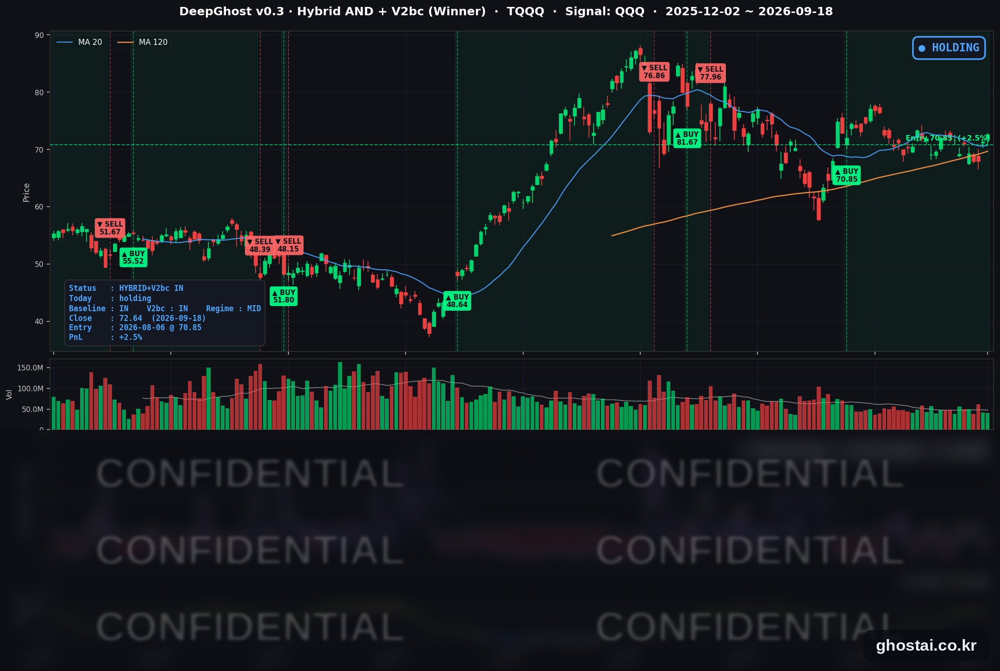

네마녀의날, 기술주 훈풍, 금리 5%
· Ghost.AI 데일리 리포트
👻 매일 시그널과 히스토리를 홈페이지에서 한눈에 → www.ghostai.co.kr
회원 페이지 안내 — 회원 가입하시면 커버리지 전 종목의 원본 시그널과 분석 레포트를 매일 확인하실 수 있습니다. 회원 페이지는 블로그·유튜브보다 먼저 업데이트됩니다. 선착순 100명을 모집하고 있으며, 이메일과 필명만으로 가입하실 수 있고 서비스 사용료는 받지 않습니다. 가입 신청 후 운영자 승인을 거쳐 이용하실 수 있습니다.
약 7조 달러 규모, 역대 두 번째로 큰 분기 동시 만기일이었습니다. 그런데 S&P 500은 +0.17%, 나스닥은 +0.39%로 크게 움직이지 않았습니다. 거래량은 크게 늘었는데 가격은 거의 움직이지 않은 하루였고, 크게 움직인 것은 지수가 아니라 개별 종목이었습니다.
📊 오늘의 매매 신호
| 항목 | 내용 |
|---|---|
| 오늘 할 일 | ✅ 아무것도 안 해도 됩니다 |
| 포지션 상태 | 📈 TQQQ 보유 중 (IN POSITION) |
| 매수 진입일 | 2026-08-06 (31거래일째) |
| 진입가 → 현재가 | $70.85 → $72.64 |
| 현재 포지션 수익 | +2.53% |
TQQQ 시그널 — IN POSITION
현재 상태: 매수 포지션 유지 중 | 이번 포지션 수익 +2.53%

나스닥100(QQQ)이 +0.63% 오르면서 TQQQ는 +1.77% 상승한 72.64달러로 마감했습니다. 전략의 평가손익은 전 거래일 +0.75%에서 +2.53%가 됐습니다. 8월 6일 70.85달러에 진입한 뒤 오늘이 31거래일째이고, 이틀 연속 올랐습니다. 이번 구간에서 가장 높았던 날은 8월 13일(+8.89%), 가장 낮았던 날은 9월 15일(-4.16%)이었고, 평가손익이 마이너스로 끝난 날은 31일 중 10일입니다.
오늘 미국 시장 — 시황 요약
지수 마감
| 지수 | 종가 | 등락률 |
|---|---|---|
| S&P 500 | 7,650.50 | +0.17% |
| 나스닥 종합 | 26,522.54 | +0.39% |
| 다우존스 | 51,682.64 | -0.18% |
| 러셀 2000 | 2,860.40 | -0.50% |
| QQQ (나스닥100) | 721.45 | +0.63% |
| TQQQ | 72.64 | +1.77% |
하루 성적보다 주간 성적의 격차가 훨씬 큽니다. 9월 11일 종가 대비 나스닥 +0.72%, S&P 500 -0.08%, 러셀 2000 -1.50%, 다우 -1.69%입니다. 이번 주 금리 인상을 소화하는 동안 대형 기술주만 올라왔고 나머지는 회복하지 못했습니다.
참고로 SPY(-0.12%)가 S&P 500 지수(+0.17%)와 방향이 갈린 것은 SPY가 분기 배당락일을 지났기 때문입니다.
국채 금리 동향
| 만기 | 수익률 | 전 거래일 대비 |
|---|---|---|
| 3개월 | 3.978% | +1.3bp |
| 5년 | 4.856% | +5.5bp |
| 10년 | 4.998% | +5.1bp |
| 30년 | 5.331% | +3.5bp |
10년물이 다시 5% 문턱에 붙었습니다. 어제 4.947%까지 내려왔던 것이 하루 만에 되돌아왔습니다.
중요한 것은 어느 구간이 올랐는지입니다. 5년 +5.5bp, 10년 +5.1bp로 중간 만기가 가장 많이 올랐고, 정책금리에 묶여 있는 3개월물은 +1.3bp, 먼 미래를 반영하는 30년물은 +3.5bp에 그쳤습니다. 5년·10년은 앞으로 1~2년의 정책금리 경로를 담는 구간입니다. 오늘 오른 것은 장기 물가 전망이 아니라 연준이 한 번 더 올릴 것이라는 기대라는 뜻입니다. 10년물과 3개월물의 차이는 98.2bp에서 102.0bp로 벌어져 하루 만에 다시 100bp 위로 올라왔습니다.
연준 발언 & 금리 패스
오늘은 제프 슈미드 캔자스시티 연은 총재가 "연준은 인플레이션에 대해 할 일이 남아 있고, 이번 주 조치는 그 방향으로 가는 한 걸음이었다"고 말했습니다. 이번 주 인상을 지지하면서 추가 인상 가능성을 열어 둔 발언입니다.
시장은 매파적으로 받아들였습니다. 5년·10년이 5bp 넘게 오르고 10월 추가 인상 베팅이 늘어난 것이 그 기록입니다. 9월 16일 인상(3.75~4.00%)이 일회성이 아니라는 쪽에 무게가 실렸고, 점도표에서 18명 중 16명이 연내 추가 인상을 본 것과 방향이 같습니다.
오늘의 핵심 이슈
-
역대 두 번째로 큰 만기일이었는데 지수는 거의 움직이지 않았습니다. 분기 동시 만기일(쿼드러플 위칭)이었고 약 7조 달러 규모의 옵션이 만기를 맞았습니다. 시장 전체의 4분의 1에 해당하는 규모입니다. 거래량에는 그대로 나타났습니다 — 커버리지 14개 종목이 빠짐없이 20일 평균 거래량을 넘겼고 중간값이 1.7배였습니다. 그런데 정작 가격은 S&P 500 +0.17%, 나스닥 +0.39%에 그쳤고, 종목별로 갈린 정도도 올해 기준으로 특별히 넓지 않았습니다. 오늘 특별했던 것은 거래량이지 가격이 아니었습니다. 만기 수급은 거래를 대량으로 발생시킬 뿐 방향을 만들지 않습니다.
-
금리가 올랐는데 나스닥은 버텼고, 이번 주 상승은 나스닥 주도였습니다. 10년물이 5.1bp 올라 4.998%로 마감했는데도 나스닥은 +0.39%, QQQ는 +0.63%였습니다. "금리가 오르면 기술주가 내린다"는 통념은 하루 단위로는 잘 맞지 않습니다. 금리 부담을 그대로 받아낸 쪽은 소형주와 경기순환주였습니다. 주간으로 러셀 2000 -1.50%, 다우 -1.69%인 반면 나스닥은 +0.72%로 홀로 플러스입니다. 지수만 보면 변동이 크지 않은 한 주였지만, 안을 들여다보면 오른 종목의 폭이 크게 좁아진 한 주였습니다.
-
반도체가 한 방향으로 움직이지 않았습니다. 마이크론 +3.92%, 브로드컴 +2.97%, 엔비디아 +1.34%가 오르는 동안 퀄컴은 -5.82%로 커버리지 최대 낙폭을 기록했습니다. 수요처가 다르기 때문입니다. AI 데이터센터가 메모리를 대량으로 가져가면서 공급이 부족해졌고 그 혜택은 마이크론에 갑니다. 반대로 스마트폰 쪽은 그 부족분을 비용으로 떠안습니다. 같은 날 출시된 애플 아이폰 18 프로가 메모리 원가 때문에 전작 대비 100달러 오른 가격으로 나온 것이 그 예입니다. 퀄컴은 당일 회사 발표가 없었고 한 달간 12% 오른 자리에서의 차익 실현이 만기일 대량 거래와 겹쳤습니다. 같은 날 반도체 ETF SOXX가 1% 올라 업종 전체의 약세는 아니었습니다.
변동성 & 투자심리
VIX는 15.44에서 14.81(-4.08%)로 이틀 연속 내렸습니다. 올해 187거래일 중 이보다 낮게 끝난 날이 10일뿐이고, FOMC 당일 17.71에서 이틀 만에 2.90포인트 내려왔습니다.
다만 공포탐욕지수는 여전히 "공포" 구간에 머물러 있습니다. 9월 18일 당일 확정치는 확인되지 않았고, 확인된 범위에서는 9월 16일과 17일 모두 공포 구간이었습니다. 변동성이 낮은 것과 시장이 낙관적인 것은 다릅니다. 지금은 지수가 흔들리지 않을 뿐, 오른 종목의 폭이 좁아진 상태에 가깝습니다.
매크로 & 원자재
| 품목 | 종가 | 등락률 |
|---|---|---|
| 금 선물 | $4,415.90 | +0.37% |
| 원유 ETF (USO) | $153.82 | -0.96% |
유가는 3거래일 연속 내렸습니다. 9월 10일 드론 공격으로 손상된 사우디 동서 송유관에 대해 사우디가 며칠 안에 절반가량, 전체는 6주가량 걸려 복구한다는 계획을 내놓으면서 공급 차질 우려가 줄었습니다. 원유 선물은 이날 최근월물 교체가 겹쳐 종가 등락이 실제 움직임을 과장하므로, 원유 ETF(USO) 기준으로 적었습니다.
지표에서는 8월 산업생산이 보합(0.0%), 제조업 생산이 -0.3%로 7개월 만에 처음 감소했습니다. 설비가동률은 76.3%로 전월과 같습니다. 금리 인상 사이클에서 제조업이 먼저 식는 전형적인 모습인데, 증시 반응은 제한적이었습니다.
해외에서는 일본은행이 정책금리를 25bp 올려 1.25%로 인상했습니다. 1995년 이후 31년 만의 최고 수준이고 직전 인상과의 간격이 6개월에서 3개월로 줄었습니다. 주요국 중앙은행이 동시에 긴축으로 움직이는 구도는 미국 장기 금리에도 상방 압력입니다.
주요 종목 동향
| 종목 | 종가 | 등락률 | 비고 |
|---|---|---|---|
| MU | 1,015.80 | +3.92% | 메모리 부족 수혜, 9/30 실적 발표 예정 |
| AVGO | 357.61 | +2.97% | AI 하드웨어 강세 동행 |
| NVDA | 222.27 | +1.34% | 9/14 AI 속도 논쟁 급락분 회복 국면 |
| AMZN | 253.71 | +1.00% | 특이 재료 없음 |
| GOOGL | 349.54 | +0.64% | 특이 재료 없음 |
| INTC | 108.60 | -0.18% | 전 거래일 +7.67% 급등 뒤 보합 |
| AAPL | 336.13 | -0.26% | 아이폰 18 프로 출시일, 메모리 원가로 가격 100달러 인상 |
| TSLA | 364.27 | -0.53% | 특이 재료 없음 |
| MSFT | 493.78 | -0.80% | 특이 재료 없음 |
| META | 665.75 | -2.43% | 특이 재료 없음, 만기 수급 영향 추정 |
| NFLX | 71.79 | -4.67% | 웰스파고 투자의견 하향, 목표주가 $80 → $57 |
| QCOM | 177.72 | -5.82% | 당일 회사 발표 없음, 한 달 12% 상승 뒤 차익 실현 |
넷플릭스는 하반기 오리지널 콘텐츠 시청시간이 전년 대비 21% 줄어들 것이라는 전망이 하향 근거였고, 4거래일 연속 하락했습니다.
크게 내린 종목들이지만 성격은 다릅니다. 넷플릭스는 원인이 분명한 하락이고, 퀄컴과 메타는 수급으로 설명되는 하락입니다. 뉴스로 설명되는 하락은 뉴스가 소화되면 멈추지만, 수급으로만 설명되는 하락은 멈출 시점을 가늠하기 어렵습니다. 하루 등락을 해석할 때 나눠 볼 만한 기준입니다.
다음 거래일 일정
- 다음 거래일은 9월 21일(월)이며 휴장·조기 폐장 일정은 없습니다.
- 시카고 연은 전미활동지수(CFNAI) 8월분 — 이날 예정된 지표는 사실상 이것 하나입니다.
- 대형 지표는 주 후반에 몰려 있습니다 — 9월 23일(수) S&P 글로벌 합성 PMI 속보치, 24일(목) 주간 신규 실업수당 청구·8월 신규주택판매, 25일(금) 8월 내구재 주문입니다.
- 국채 입찰은 22일 2년물, 23일 5년물, 24일 7년물입니다. 오늘 중간 만기가 가장 크게 오른 만큼 소화 여부를 확인할 자리입니다.
Ghost.AI — Quantitative AI Investment
Model: DeepGhost v0.3 | Transformer-Based Deep Learning
Coverage: 13 tickers | Updated every trading day after US market close
⚠️ 본 자료는 정보 제공 목적으로만 작성되었으며 투자 권유가 아닙니다. 모든 투자의 책임은 투자자 본인에게 있습니다. 과거 성과가 미래 수익을 보장하지 않습니다.
[유의사항]
- 본 서비스는 불특정 다수를 대상으로 발행되는 단방향 정보 제공 서비스이며, 투자자 개인의 재산 상황·투자 목적·위험 선호도를 반영한 개별 투자 조언이 아닙니다.
- 고스트에이아이 주식회사는 고객과 쌍방향 의사소통(개별 상담, 맞춤형 자문 등)을 제공하지 않습니다.
- 본 콘텐츠는 투자 권유 또는 매매 주문의 청약·청약의 권유에 해당하지 않으며, 최종 투자 판단 및 그에 따른 손익의 책임은 전적으로 투자자 본인에게 있습니다.
고스트에이아이 주식회사